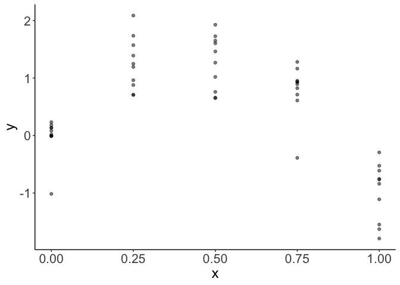

How to solve common problems with GAMs
Here I’ll provide solutions to some common problems I run into when fitting GAMs with mgcv and ways to solve them. The four problems are:
Categorical variables should be input to gam() as factors
Adjust the degrees of freedom parameter to avoid an error involving the maximum degrees of freedom
Use the REML method for smaller datasets to avoid overfitting
How to deal with crazy extrapolations of a response when there are large gaps in measurements of a covariate
Categorical variables should be factors
Categorical variables can cause errors if they are not specified in dataframes as character vectors, and not as factors. But mgcv is inconsistent about whether you need to use factors or not. It is always safest to declare categorical variables as factors if using mgcv.
Oddly character vectors are fine if the categorical variable is included as an additive term like:
fit1 <- gam(y ~ s(x) + group)But if you want the spline to vary by groups like this:
fit1 <- gam(y ~ group + s(x, by = group))You will get this obscure error message:
Error in smoothCon(split$smooth.spec[[i]], data, knots, absorb.cons,
scale.penalty = scale.penalty, : Can't find by variableThe solution is as simple as changing the class of your categorical variable before using the GAM: dat$group <- factor(dat$group).
The new version of R (>4.0) defaults to reading in external dataframes with stringsAsFactors == FALSE meaning it reads categorical variables in as characters, not factors. Factors can be more annoying than characters for many other reasons, so watch out for this error with your GAM code.
Insufficient degrees of freedom
The default settings for GAM smooths is to try and estimate the degrees of freedom (which controls the ‘wiggliness’) from the data. But this routine can fail if you many more replicates than levels in the smooth. Consider this data:

We have ten replicates for each of 5 levels of x. Data like this is common in experimental settings.
If I try fit a GAM with default settings I get an error:
fit1 <- gam(y ~ s(x), data = dat)
## Error in smooth.construct.tp.smooth.spec(object, dk$data, dk$knots):
A term has fewer unique covariate combinations than specified maximum
degrees of freedomMeaning the GAM has failed to construct a sensible smooth term for this data. You can limit the maximum df of the smooth using the k parameter:
fit1 <- gam(y ~ s(x, k = 3), data = dat)Now my GAM fits fine and looks like this:
If you want to force the GAM to fit a smooth a specific degrees of freedom, then use fx = TRUE:
fit1 <- gam(y ~ s(x, k = 4, fx = TRUE), data = dat)The above code forces the GAM to fit with exactly k-1 = 2 an effective DF (EDF in the gam summary).
Overfitting
The default method for fitting in GAM tends to overfit smaller datasets. Overfitting tends to look like spline fits that are too wiggly.
How you define ‘small’ depends on variation and effect sizes in your data WRT the model, but generally sample sizes smaller than 100s to 1000s of samples ‘small’ in this context.
This overfitting is well known and is described in Simon Wood’s classic book on GAMs and mgcv.
Here’s an example. Say you were expecting a smooth, but non-linear, fit to your data. You use a GAM, but you get a result like this:
Those bumps in the curve cannot be justified by any a-priori knowledge you have about the system you are studying. So you’d like a smoother fit.
The default method uses generalized cross validation to fit the smooth. The restricted maximum likelihood method is more robust for small sample sizes. So generally in ecological datasets you’ll want to specify the “REML” method like this:
fit1 <- gam(y~ s(x), method = "REML", data = dat)Now our smooth looks like a more reasonable linear slope:
Now your trend reduces to a straight linear trend.
Extreme interoplated values
Gaps in an x-covariate, such as gaps in a time-series, can be a problem to deal with if you are trying to interpolate to those gaps.
Quoting from my last blog about interpolation with GAMs:
There is no straightforward answer to solving this problem. The answer depends on what you know about the system from prior work. Ideally you’d collect more data for the intermediate x values, but if that is not possible here are some options:
Keep the result above if you have reason to believe there truly is a hump shaped relationship between x and y. If you that x causes y and have a theory for that relationship then the extrapolation of y values might be reasonable. This theory would be based on prior work on the two variables.
Keep the fit above but refrain from making predictions in the gap.
Try a different basis spline for the smooth. See
?smooth.termsfor optionsModify the smoother to have a first order, not second order, penalty. See my last blog for an explanation. You’ll get a fit like this:

Detailed example of fitting GAM with categorical variable
Here is a detailed explanation.
First generate some data. We’ll simulate some data y that is related to x via a polynomial (hump shaped) function. Then there will be three groups in variable grp. Each group has a different mean, which will just offset the three groups on the y-axis from each other. See plot below:
library(ggplot2)
library(mgcv)
n <- 99
dat <- data.frame(x = runif(n),
grp = rep(letters[1:3], each = n/3),
cat_effect = rep(c(0, 1, -1), each = n/3))
dat$y <- with(dat, 7*x -8*x^2 + cat_effect + rnorm(n, sd = 0.1))
ggplot(dat) +
aes(x = x, y = y, color = grp) +
geom_point() +
theme_classic()First we’ll fit a model that fits a spline to x and estimates a constant additive term for each group. This should provide a good fit to the original data, because it is very close to the model we used to generate the data. The splines should be able to approximate the polynomial and the categorical will allow for each group’s curve to be offset.
fit1 <- gam(y ~s(x) + grp, data = dat)This fits fine, I like to use visreg to view GAM results. This plot will show x on the x-axis, fits on the y-axis and have one panel for each group.
library(visreg)
visreg(fit1, xvar = "x",
by = "grp", data = dat,
method = "REML")
Now say we want to compare this to a model where we allow splines to vary for each group. This model looks like this:
fit2 <- gam(y ~s(x, by = grp) + grp, data = dat)
## Error in smoothCon(split$smooth.spec[[i]], data, knots, absorb.cons,
scale.penalty = scale.penalty, : Can't find by variableWhich gives us an error. So simply convert the group to a factor (here I declare a new variable) and use that:
dat$grp2 <- factor(dat$grp)
fit2 <- gam(y ~s(x, by = grp2) + grp2, data = dat)
visreg(fit2, xvar = "x",
by = "grp", data = dat,
method = "REML")Now it works fine.